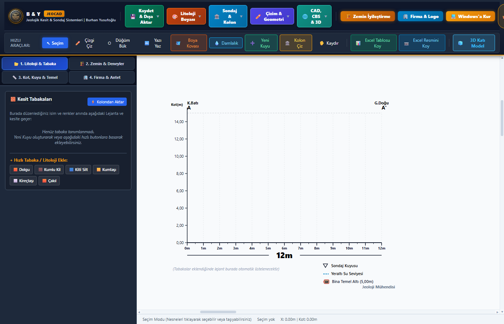

Excel sondaj loglarınızı, saha karot sandığı fotoğraflarınızı ve geoteknik deneylerinizi tek hamlede sürükleyip bırakın. 2D akıllı litolojik kesitleri ve 3D katı modelleri saniyeler içinde çizin. AutoCAD, NetCAD ve CBS ile %100 uyumlu.

Daha Hızlı Kesit Çizimi ve Raporlama
Yerli, Bağımsız & Çevrimdışı Çalışma
Evrensel CAD & CBS Formatı (DXF, SHP, CAD)
Litoloji, SPT-N, Presiyometre, YAS, Karotlar
Yıllardır süregelen manuel kopyalama hatalarını, saatler süren tarama (hatch) boyamalarını ve karmaşık yabancı program lisanslarını tarihe gömün.
Jeoloji mühendisleri, zemin araştırma şirketleri, inşaat mühendisleri ve mimarların ihtiyaç duyduğu tüm araçlar tek çatı altında.
Çok sekmeli Excel (.xlsx / .xls) dosyalarını ve saha klasörlerini anında analiz eder. Kuyu derinliklerini, litolojileri, SPT-N vuruşlarını ve Presiyometre değerlerini otomatik okur.
Word belgelerindeki veya klasördeki karot sandığı fotoğraflarını otomatik çıkartır, sınıflandırır ve kesit üzerindeki ilgili sondaj kuyusunun altına bilgi kartı olarak yerleştirir.
Düz kaba çizgiler yerine doğanın gerçek formunu yansıtan Catmull-Rom oval eğimli litoloji geçişleri. Son kolonda biten akıllı boyama, kova ve damlalık araçları.
Tüm sondaj kuyularını ve yeraltı tabakalarını 3 boyutlu uzayda silindirik kolonlar olarak canlandırın. Fare ile 360° serbestçe döndürün, zum yapın ve katmanları inceleyin.
AutoCAD, NetCAD, ArcGIS ve Autodesk Civil 3D için katmanlı (layer) vektörel DXF üretir. Kuyu koordinatlarını ITRF96 ve WGS84 formatlarına dönüştürür.
Jet Grouting, Fore Kazık ve Taş Kolon parametrelerini modelleyin. Sıvılaşma riski, taşıma gücü ve oturma analizlerini kesit üzerinde anında görselleştirin.
Karmaşık eğitimlere, günlerce süren kurslara gerek yok. Anlaşılır arayüzü sayesinde 2 dakikada uzmanlaşın.
Kurulum veya kurulum sihirbazı gerekmez. İndirdiğiniz JeoCAD.exe dosyasını doğrudan çalıştırın.
Åantiyeden gelen Excel loglarınızı ve karot sandığı fotoÄŸraflarınızı içeren klasörü ekrana sürükleyip bırakın.
"Normal Grafiği Çiz (2D)" veya "3D Katı Model Çiz" butonuna basın. Adobe PDF veya DXF olarak kaydedin.
Bilgisayarınıza uygun dağıtım seçeneğini tercih edin. Hiçbir kurulum yapmadan USB belleğinizden dahi hemen çalıştırabilirsiniz.